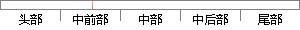

实验结果表明：词素特征能够有效地刻画域名字面的语言学特征，与n元组频率分布特征相比，可以提高检测准确率，降低假阳性，有效抵挡攻击者借助事前相应特征统计的逃避策略以及借助字典或Kwyjibo工具的随机域名生成策略；
片段位置图

相似结果|
1
原句片段：实验结果表明：词素特征能够有效地刻画域名字面的语言学特征，与n元组频率分布特征相比
相似片段 1：域名字面蕴含的词素(词根、词缀、拼音及缩写)特征,提出一种轻量级检测算法,能够...实验结果表明:基于词素特征的检测算法比统计n元组频率分布的方法虽然略微增加了58...
|
※ 片段修改建议 ※
近似词参考：- 实验：尝试 实行 试验
- 特征：特点 特性
- 能够：可以或许
- 刻画：描绘 描画 刻划
- 特征：特点 特性
- 分布：散布 漫衍
- 特征：特点 特性
- 相比：比拟
- 提高：进步
- 降低：下降 低落
- 有效：有用
- 抵挡：招架 抵抗 反抗
- 事前：事先
- 相应：响应
- 特征：特点 特性
- 逃避：回避 躲避
- 策略：计谋
- 以及：和
- 工具：东西 对象
- 生成：天生
- 策略：计谋
系统自动生成语句：尝试结果表明：词素特点可以或许有用地描绘域名字面的语言学特点，与n元组频率散布特点比拟，可以进步检测准确率，下降假阳性，有用招架攻击者借助事先响应特点统计的回避计谋和借助字典或Kwyjibo东西的随机域名天生计谋；
注：本片段修改建议为系统自动生成，仅供参考。